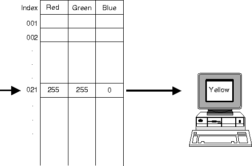

A logical color table contains a variable number of entries, each of which describes a different RGB (Red, Green, Blue) combination that produces a color. The principle of the color table is illustrated in the following figure.
Logical Color Table
This simplified example demonstrates that to produce yellow on the computer screen, red and green are mixed in equal intensities, and no blue is used at all. In this example, yellow is addressed in the color table by index 21. Notice that this is not the same index number used in the default logical color table, which indicates that this color table has been changed by the application.
A logical color table is stored in a presentation space and is specific to that presentation space. A logical color table enables applications to specify colors as indexes rather than explicit RGB values.
The colors displayed are likely to vary from one output device to another so the definitions in the color table can be fine-tuned to get the best results. Any color can be made more or less intense by altering its definition in the logical color table.